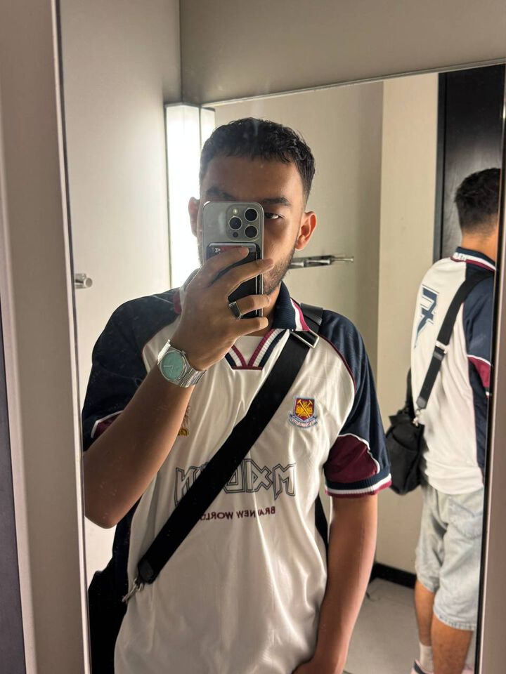
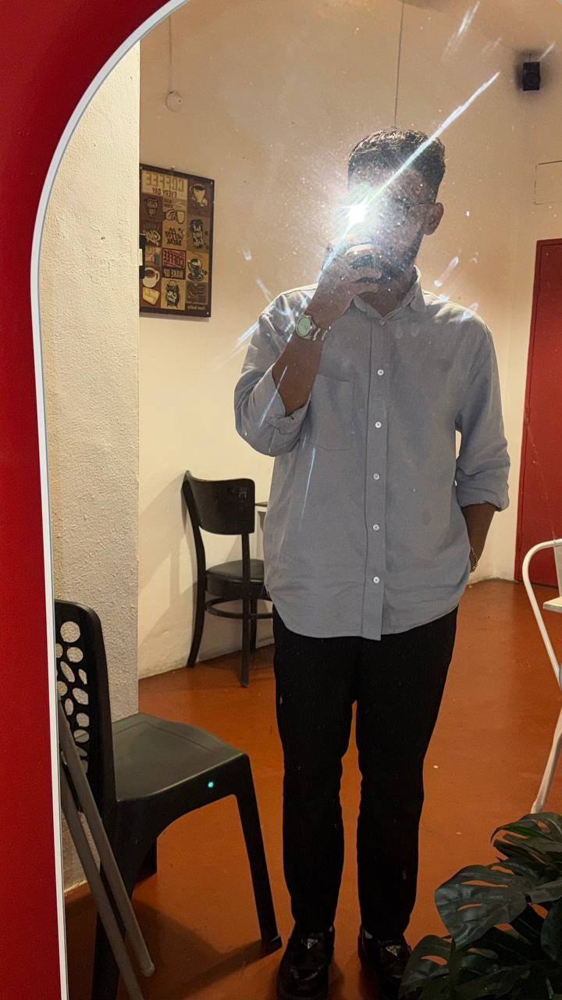
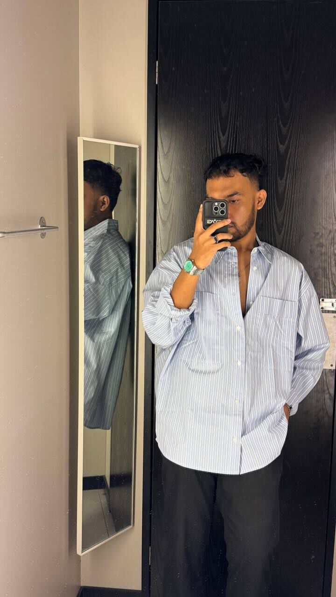

About Us
One-person mission
I’m Muhammad Shah Redza, a Diploma in Computer Technology (Big Data) student at TVETMARA Lumut. Before that I spent over a year and a half as a Sales Advisor at H&M, which gave me a strong foundation in the fashion industry.
SR Worldwide is where my two interests meet: fashion and technology. The goal is an online fashion platform that offers high-quality, stylish apparel and a shopping experience that feels as good as the clothes.
Shop the collection


What Drives Us
At SR Worldwide, our vision extends far beyond fashion. We entered this industry not merely to sell clothes, but to foster a vibrant, inclusive community. We don’t just offer style: we offer a sense of identity, empowerment, and belonging. Fashion is our medium, but community is our true purpose.
The story so far
- Jan–Jun 2025
Built as a Semester 1 group project (DFD10033 Big Data Programming Fundamental) with HTML, PHP and MySQL. - 2026
Redesigned from scratch: a modern, mobile-first design for the shop, customer account and admin screens.